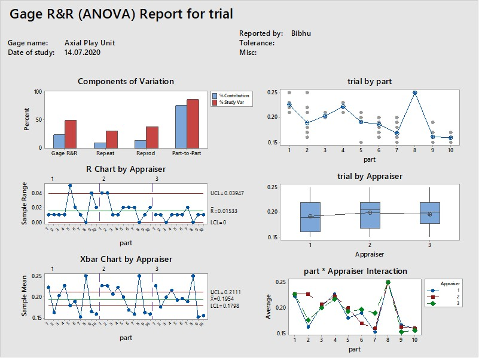
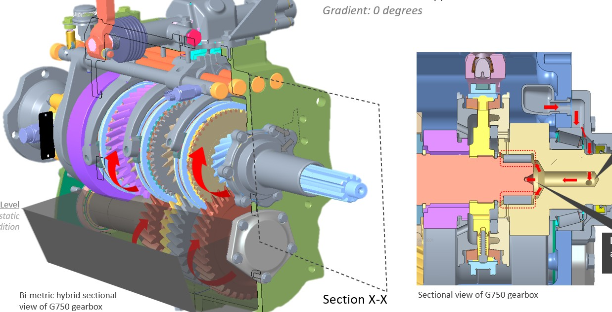
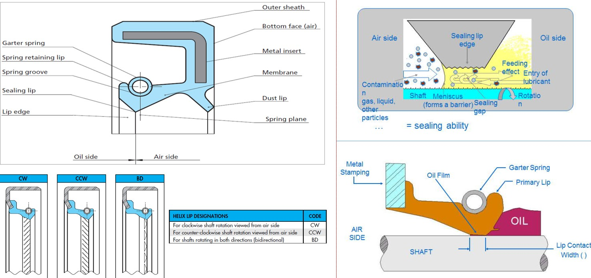

Project Details
P1. Gearbox Bearing Failures
P2. Gearbox Oil Leakage Failures
- Category: Professional
- Affiliation: Tata Motors Ltd. Jamshedpur CVBU
- Sponsor: Transmissions BU
- Mentor: Mr. Ashis Das, BU Head, Transmissions Unit
- Contribution: Leader (P1), MFG Member (P2)
- Team: MFG, QA, AQ, SCM, ERC
- Project date: May 2020 - Oct 2020
Two Six Sigma projects at Tata Motors' transmission plant to cut gearbox failures under warranty: one on bearing failures, which I led, and one on oil leaks, where I was a manufacturing team member.
When a truck gearbox fails under warranty, the manufacturer pays for parts and labour, the customer loses a working vehicle, and the brand takes a hit. In 2020 I worked on two Six Sigma projects aimed at the two problems that were hurting our gearboxes most: bearings that wore out early, and oil that leaked out. The first I led. Both followed the same rule: no fix until data proves the cause.
50%reduction in bearing-related warranty expense per vehicle
11 → 3suspected causes of bearing failure tested, three confirmed
204oil-leak warranty complaints broken down by model, mode and mileage
11people across manufacturing, quality, supply chain and design in the bearing team I led
How warranty failures are counted. Two numbers track them. IPTV (incidents per thousand vehicles) counts how often a problem occurs; EPV (expense per vehicle) measures what it costs. Both are tracked at fixed ages, such as 3, 12 or 24 MIS (months in service), because a defect that shows up in the first three months points to a different cause than one that appears after two years of hard use.
Project 1: Bearing failures (I led this project)
Define: the problem and the goal
Bearing failures were among the most expensive gearbox defects: the second-largest contributor to warranty expense at 12 months in service and the fourth-largest at 24. One gearbox family, the G750, stood out with by far the most bearing failures at 24 months. The charter set a target of halving bearing-related IPTV and EPV across four gearbox families (G600, G750, G950 and G1150), with a scope running from component suppliers all the way to the service centre. The eleven-person team spanned manufacturing, quality, advanced quality, supply chain and design, mentored by the head of the transmissions business.
Measure and analyze: eleven suspects, three culprits
The team listed every plausible cause and then tested each one with data, using whichever tool fitted the question:
- Water in the gear oil? One hypothesis was that water from the dip-test station was dripping into the flushing tank and contaminating gearboxes. Weekly oil tests over three months (crackle test for water, sediment, viscosity) were all within specification. Ruled out.
- Shaft bore taper and surface finish? Parts from the best and worst gearboxes were compared head-to-head. Neither measurement separated good from bad. Ruled out.
- Unreliable axial-play measurement? Shims set the end-play of the shafts during assembly. Gauge studies showed the shim-selection units were fine, but the unit that checks drive-shaft axial play did not give repeatable readings. Confirmed.
- Oil starvation in the drive-shaft rollers? On steep mining gradients, oil drains away from the drive-shaft roller bearing, and centrifugal force works against what little oil reaches it. Unlike the G950 and G1150, the G750 had no forced lubrication and carried less oil. Of 127 bearing complaints in a year, 58 were pitted drive-shaft rollers, most with burn marks that point to overheating. Confirmed.
- The wrong PTO on the wrong truck? Countershaft bearing failures clustered on one 25-tonne chassis meant for ready-mix concrete mixers. In the field, many had been converted into mining tippers with an aftermarket side-mounted PTO designed for 16-tonne trucks, overloading the countershaft. Confirmed.
Two of the tools. A paired comparison lines up parts from the best and worst performing units and checks whether a measurement consistently separates them; if it doesn't, it isn't the cause. A gauge R&R study measures the same parts repeatedly with different operators to check whether the measuring device itself is trustworthy. If the gauge varies more than the parts do, decisions based on it are guesswork.


Improve: scoring the fixes
Each confirmed cause got several candidate solutions, scored on effectiveness against the root cause (weight 10), time to implement (8) and cost–benefit (5), and checked for potential problems before piloting. The highest-scoring actions were:
- Field misuse: treat warranty claims from mining use of the concrete-mixer chassis as out of warranty (score 220), alongside sales and service support to stop the conversion at dealerships.
- Measurement: a new pneumatic clamping arrangement for the axial-play checking unit (188), with a fixed dial-gauge stand aligned to the shaft axis.
- Oil starvation: move heavy-load and steep-gradient trucks from the G750 to the larger G950 or G1150 gearbox (183), and add an oil channel through the drive shaft (178).
Status at the October 2020 review
- The new axial-play setup achieved repeatable readings on the G1150. On the G750 it fouled the assembly pallets, so the fixture was redesigned.
- The gearbox upgrade was implemented through the BS-VI emission-norm model releases, which moved most heavy cargo and tipper models from the G750 to the G950 or G1150.
- The drive-shaft oil channel was in development.
- The first ten misuse claims were sent for rejection, four had been rejected, and 28 more were under review.
Project 2: Oil leakage (manufacturing team member)
The problem
An oil leak is more than a stain under the truck. Less oil means less lubrication, then burnt components and eventually a seized gearbox. Oil-leak IPTV and EPV had risen sharply between March 2019 and March 2020, so a Black Belt project was launched to cut oil-leak failures by 60% (with 30% as the threshold and 50% as success). Its risk assessment scored 25 out of 26, a high chance of success.
What the data showed
The team stratified 204 oil-leak complaints, out of 2,821 transmission complaints in a year, by gearbox model, vehicle model, dealer, region, mileage, failure mode and production month:
- The smallest gearbox (G600) caused the most leak incidents (35% of IPTV), while the G1150 caused the most leak expense (32% of EPV). Much of that G1150 expense traced back to claims booked under the wrong code, not real gearbox faults.
- Defective oil seals, dry or damaged gaskets and hardened seal lips made up about 80% of failures.
- Failures came early, within the first 10,000–40,000 km, and clustered in particular production months: a sign of assembly or supply problems rather than wear.
- Leaky dust caps on the G950 matched months with higher in-house dust-cap defects, pointing to process instability on the line.
The team also mapped every sealed joint on each gearbox (nine on the G750, ten on the G1150), drew process flows from the supplier through assembly and testing to the customer, and compared seal designs across models, including dust seals, pressing depth and oil grade.

Quick wins on the line
- A magnifying lens at the station to inspect every oil seal for contamination before fitting, and enclosed storage for seals.
- A redesigned coupling flange on the G750, with an added entry chamfer and a changed surface finish.
- A new O-ring on the G750 lower rear cover.
- Rust control for spacers: parallelism corrected at the supplier, in-house cleaning of rusty spacers stopped, and first-in-first-out storage.
What this tells us
- Most suspects are innocent. Eight of eleven plausible bearing causes were ruled out by data, which saved effort on fixes that would not have helped.
- Check the gauge before the part. One of the three real causes was a measuring device, not a component.
- Field use matters as much as the factory. Steep mining gradients and aftermarket conversions caused failures that no assembly-line fix could prevent.
My role
I led the bearing-failure project, coordinating an eleven-person cross-functional team through all five DMAIC phases under the mentorship of Ashis Das, head of the transmissions business. On the oil-leakage Black Belt project, led by Indranil Basu, I was one of the manufacturing members.
Based on the project review presentations (October 2020). Figures are from those presentations or drawn for this site. Part numbers, dealer and customer details, supplier names and internal business figures have been left out.
Outcomes:
- Gearbox Warranty Failures occuring due to bearing failures/issues reduced by 50% (in terms of Expense per Vehicle in warranty)
- Expense per Vehicle due to gearbox Oil Leakage Failures reduced by upto 50-60% in 3MIS, 6MIS vehicles. Data for 12MIS & 24MIS failures is unavailable to me for validation